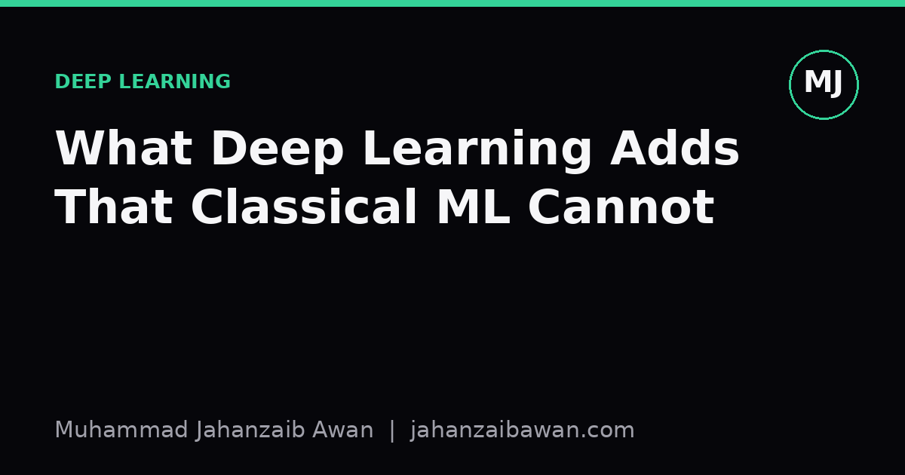
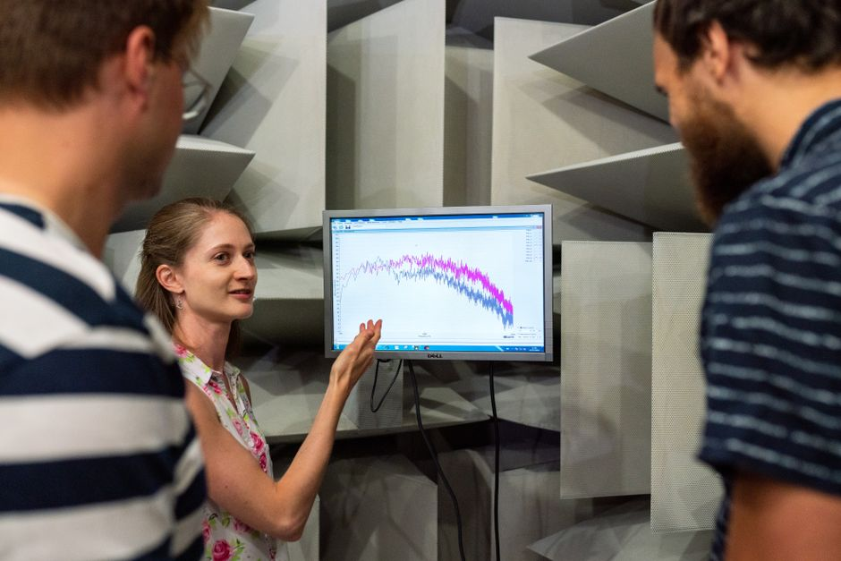

What Deep Learning Adds That Classical ML Cannot
The real advantage of deep learning is not raw accuracy, it is learning the representation itself rather than relying on someone to hand-craft it.

The question people usually get wrong
When someone asks what deep learning adds that classical machine learning cannot do, the tempting answer is 'better accuracy'. That answer is wrong often enough to be misleading. A well-tuned gradient boosted tree on tabular data with a few thousand rows will frequently beat a neural network on the same problem, sometimes by a comfortable margin. If accuracy on structured, tabular problems were the whole story, deep learning would not deserve the attention it gets.
The honest answer is narrower and more interesting: deep learning adds the ability to learn a useful representation directly from raw, high-dimensional, weakly structured signal, without a human deciding in advance what the relevant features are. Classical machine learning, whether it is logistic regression, support vector machines, or random forests, assumes you have already done the hard intellectual work of turning raw data into meaningful numeric features. Deep learning tries to fold that feature construction step into the training process itself.
This distinction sounds abstract until you put a concrete example next to it. Once you do, the difference in what each approach can plausibly achieve becomes obvious, and so do the costs that come with it.
A worked example: recognising a spoken command
Suppose the task is to classify a one-second audio clip as one of ten spoken words, say the digits zero to nine. A classical approach starts with feature engineering: you might extract mel-frequency cepstral coefficients, compute pitch and energy statistics over short frames, maybe add zero-crossing rate, and end up with a feature vector of perhaps forty numbers per clip. You feed that into a support vector machine or a random forest. This can work reasonably well, and for a small, clean dataset it might reach something like ninety percent accuracy, because the engineered features were designed by someone who understood acoustics and knew which properties of speech carry information about which digit was spoken.
Now consider a convolutional or recurrent network trained directly on the raw waveform or a raw spectrogram, with no hand-designed features at all. The early layers of the network learn filters that behave a bit like frequency detectors, not because anyone told them to, but because those patterns are useful for reducing the training loss. Later layers combine those detectors into representations of phonemes, and layers after that combine phonemes into something closer to whole-word patterns. Given enough labelled examples, perhaps tens of thousands rather than a few hundred, this pipeline can match or exceed the hand-engineered one, and it does so having discovered the relevant structure itself.
The important number here is not the final accuracy, it is the amount of labelled data required to get there. With three hundred examples, the hand-engineered pipeline usually wins, because forty carefully chosen features are easier to fit reliably with little data than millions of network weights. With thirty thousand examples, the balance often flips, because the network can now discover representations that are better tuned to this exact task than any generic acoustic feature set. Deep learning's advantage scales in with data and with the rawness of the signal; it does not appear by default.

Why this matters beyond the toy example
This pattern generalises across images, text, and other high-dimensional signals. For an image, a classical pipeline requires someone to define edge detectors, colour histograms, or texture descriptors before a classifier ever sees the data. For text, it requires deciding on bag-of-words counts, n-grams, or TF-IDF weighting before a model can use the content at all. In every one of these cases, the human is imposing a fixed, generic notion of 'what matters' onto the data, and that notion is necessarily a compromise, because it has to work across many different tasks rather than being tuned to this one specific problem.
Deep networks, given enough labelled examples and enough compute, replace that generic compromise with a representation optimised end-to-end for the actual objective. That is genuinely new capability, not just a performance bump. It is why deep learning became the default for speech, vision, and language problems specifically, and why it has been slower to displace gradient boosted trees on plain tabular business data: tabular columns like age, income, and transaction count are already reasonably meaningful features, so there is less structure left for a network to discover, and the classical model's stronger inductive bias towards low-dimensional, tabular relationships tends to win with limited data.
There is a cost side to this that is easy to underplay. Learning a representation from raw signal means learning far more parameters, which means needing far more labelled data, far more compute, and far more care around evaluation, because a large network can memorise idiosyncrasies of a small dataset rather than learning anything general. A leakage-aware split matters more here, not less, because a network's capacity to fit noise is larger than a shallow model's, and the difference between validation performance that reflects real generalisation and validation performance that reflects subtle leakage grows accordingly.
The practical takeaway
If you are choosing between a classical model and a deep one, the question to ask is not 'which is more accurate' in the abstract, it is 'does this problem involve raw, high-dimensional signal where hand-crafted features are a genuine bottleneck, and do I have enough labelled data to let a network learn something better than those features'. If the answer is no on either count, a well-tuned classical model with sensible features is usually the faster, cheaper, and more interpretable choice, and it deserves to be your baseline regardless of what you eventually ship.
The deeper lesson is about honesty in how we describe these tools. Deep learning is not simply 'a better algorithm'; it is a different division of labour between the human and the model, trading hand-designed structure for learned structure, and that trade only pays off once you have enough data and enough raw signal to make the learning worthwhile. Understanding that trade-off, rather than reaching for the newest architecture by default, is what separates a considered modelling decision from a fashion choice.
